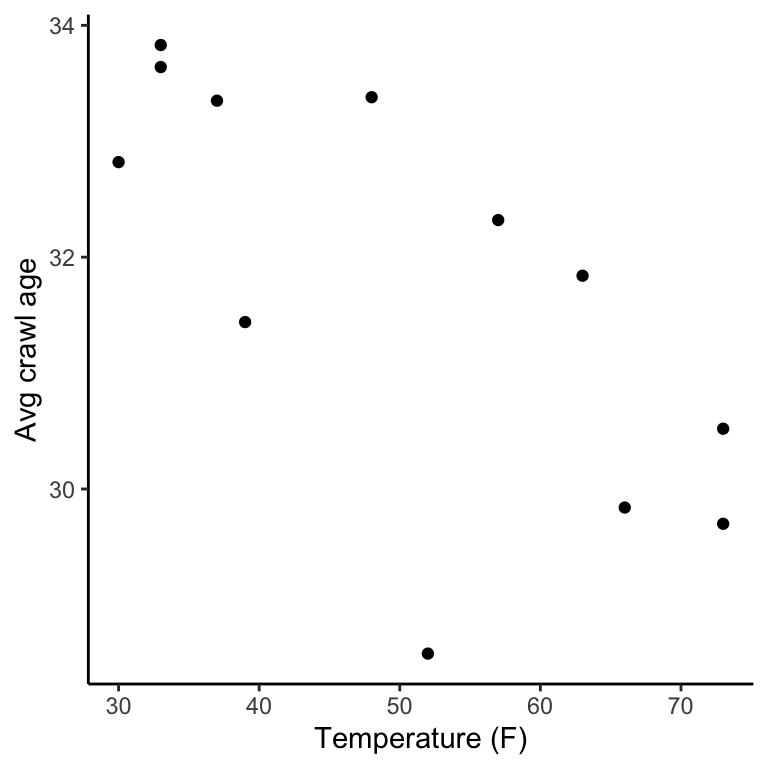
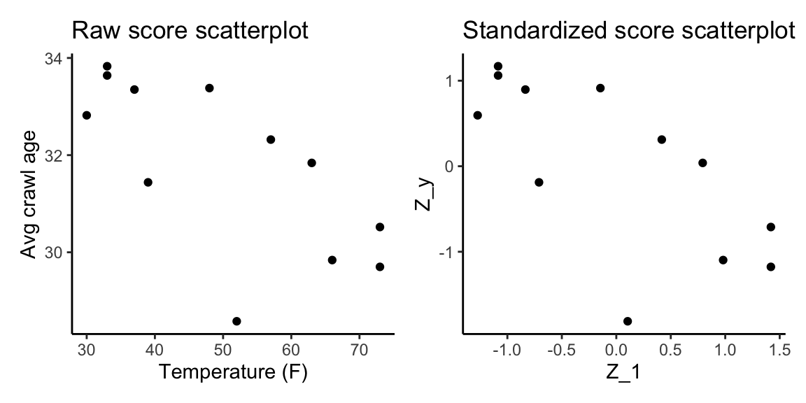

Chapter 2 Review of Pearson correlation
2.1 Consider two variables separately
- Suppose you are given two variables, \(X_1\) and \(Y\)
- Each measured on an interval or ratio scale (for now).
- Interval scale: equal intervals between scale points but has an arbitrary 0; permits +, - operations; An example would be the SAT score.
- For example, we can add/subtract in a meaningful way but it doesn’t make sense to multiple or divide SAT score because it assumes the 0 would be meaningful (the lowest possible SAT score is 400).
- Ratio scale: equal intervals and a true 0 (which denotes absnce of construct); permits +, -, *, / operations; for example: Age.
- Multiplying and dividing makes sense in this case because a 4 year old is twice as old as a two year old.
- Interval scale: equal intervals between scale points but has an arbitrary 0; permits +, - operations; An example would be the SAT score.
- With a sample size of \(n\)
- Scores for individual \(i\) are \(X_{1i}\) and \(Y_i\).
Example data set:
- \(X_1\) is the average monthly temperature baby first tries tto crawl (F)
- \(Y\) is baby’s age of first crawl (in weeks)
- \(n = 12\)
| observation | \(X_1\) (temp) | \(Y\) (weeks) |
|---|---|---|
| 1 | 66 | 29.84 |
| 2 | 73 | 30.52 |
| 3 | 72 | 29.7 |
| 4 | 63 | 31.84 |
| 5 | 52 | 28.58 |
| 6 | 39 | 31.44 |
| 7 | 33 | 33.64 |
| 8 | 30 | 32.82 |
| 9 | 33 | 33.83 |
| 10 | 37 | 33.355 |
| 11 | 48 | 33.38 |
| 12 | 57 | 32.32 |
2.1.1 Descriptive statistics
First, we consider the variables separately, looking at descriptive statistics for each variable.
Note: When estimating a piopulation quantity, use \(n-1\) to account for the loss of 1 degree freedom.
Mean: \[ \bar{X_1} = \frac{\sum{X_{1i}}}{n} = 50.25 \\ \bar{Y_1} = \frac{\sum{Y_{i}}}{n} = 31.77 \] Variance (unbiased): \[ sd_{1}^2 = \frac{\sum{(X_{1i} - \bar{X_1})^2}}{n-1} = 251.11 \\ sd_{Y}^2 = \frac{\sum{(Y_{i} - \bar{Y})^2}}{n-1} = 3.10 \]
Variance (biased): \[ SD_{1}^2 = \frac{\sum{(X_{1i} - \bar{X_1})^2}}{n} = 230.19 \\ SD_{Y}^2 = \frac{\sum{(Y_{i} - \bar{Y})^2}}{n} = 2.84 \]
Standard deviation: \[ sd_1 = \sqrt{sd_{1}^2} = 15.85 \\ sd_Y = \sqrt{sd_{Y}^2} = 1.76 \\ SD_1 = \sqrt{SD_{1}^2} = 15.17 \\ SD_Y = \sqrt{SD_{Y}^2} = 1.69 \]
2.2 Relationnship between two variables
Now, let’s consider the relationship between the two variables. The hypothesis is that infants take longer to learn to crawl in cold weather.
2.2.1 Graphical representation
We can graphically represent the relationship between two variables using a scatterlot. In a scatterplot, each axis represents one variable. Each observations are represented as points in space, with coordinates of pint corresponding to scores on \(X_1\) and \(Y\). Here we are focusing on linear relationships. Scatterlot can provide some informal/qualitative information about the presences of a linear relationship.

However, it would be convenient to also have a quantitative measure summarizing the degree or strength of the linear relationship.
2.2.2 Covariance
One possible quantitative measure of linear association we could use is covariance. * Covariance between \(X-1\) and \(Y\): \[ c_{Y1} = \frac{\sum{(X_{1i} - \bar{X_1})(Y_{i} - \bar{Y})}}{n-1} = -19.53 \]
- However, the covariance is not independent of the scales of \(X_1\) and \(Y\). Thus, its magnitude as affected by both the strength of linear relationship and the scales of the variables.
- So if \(Y\) has variance of 1,000,000 and \(X_1\) has a variance of10, it is hard to know what covariance means because of the different scales
- Consequently, the covariance is not bounded by -1 and +1.
2.2.3 Pearson correlation coefficient
So we would like a quantitative measure summarizing the degree or strength of the linear relationship. And we would like that measure to not change with ann arbitrary change in units of the variables…
We can eliminate scale issues for \(X_1\) and \(Y\) by dividing by the standard deviations of both variables, yielding the Peaarson correlation coefficient: \[ r_{Y1} = \frac{\sum{(X_{1i} - \bar{X_1})(Y_{i} - \bar{Y})}}{(n-1)sd_{1}sd_{Y}} \]
or, equivalently (\(c_{Y1}\)) was defined as the covariance: \[ r_{Y1} = \frac{c_{Y1}}{sd_{1}sd_{Y}} \]
The correlation is independent of scales of measurements because it uses standardized scores(\(z_1\) and \(z_Y\)) which are not altered by linear transformation of raw scores (\(X_1\) and \(Y\)). \[ r_{Y1} = \frac{\sum{(X_{1i} - \bar{X_1})(Y_{i} - \bar{Y})}}{(n-1)sd_{1}sd_{Y}} \\ = r_{Y1} = \frac{\sum{z_{1i}z_{Yi}}}{n -1} \]
where \(z_{1i}\) and \(z_{Yi}\) are standardized scores (z-scores). \[ z_{1i} = \frac{(X_{1i} - \bar{X_1})}{sd_1} \\ z_{Yi} = \frac{(Y_{i} - \bar{Y})}{sd_Y} \]
Properties of standardized scores (z-scores)
- Means are equal to 0
- Variance always equal to 1
You can find the standardized score in R usinf the
scale()function:
scale(data_crawl$temp)- Standardized sscores(z-scores) represent relative standing with respect to the mean.
- Standardizing varibales does not change the ranking of scores
- As you can see from the table below, the rank of z-scores are the same as the rank of raw scores.
- Raw scores that were above/below the mean corresponds with z-scores above/below 0.
## temp weeks Z_1 Z_y z1_zy
## 1 66 29.84 0.9807934 -1.09717461 -1.07610160
## 2 73 30.52 1.4190202 -0.71093886 -1.00883661
## 3 73 29.70 1.4190202 -1.17669374 -1.66975220
## 4 63 31.84 0.7929819 0.03881291 0.03077793
## 5 52 28.58 0.1043397 -1.81284675 -0.18915193
## 6 39 31.44 -0.7095101 -0.18838460 0.13366078As well, points in standardized scores scatterplot retain the same relation to each other as in raw scores scatterplot. The underlying relationship remains the same. 
Now let’s calculate the Pearson correlation using the
data_crawl$z1_zycolumn. \[ r_{Y1} = \frac{\sum{z_{1i}z_{Yi}}}{n -1} = \frac{-7.71}{11} = -.70 \]Let us consider how this measure behaves under different relationships of variables:
- Negative relationships: multiplying (+)(-) scores yields a negative sum of products
- On average, being positive on x meant they were negative on y , meaning that we can expect a lot of negative values in the sum of products, thus resulting in a negative correlation.
- Positive relationship: multiplying (+)(+) or (-)(-) yields a positive sum of products
- Zero relationship: yields zero sum of products
- Negative relationships: multiplying (+)(-) scores yields a negative sum of products
correlations are bounded by +1 (perfect positive correlation) and -1 (perfect negative relationship) because the variance of a standardized variable is 1/-1.
2.3 Interpreting a Pearson correlation
- Magnitude: measures strength of linear relationship (larger absolute values are stronger)
- Sign indicates direction of linear relationship
- Independent of scales of measurement
- This is because standardized scores (\(z_1\) and \(Z_Y\)) are noot alterated by linear transfoormatino of raw scores (\(X_1\) and \(Y\))